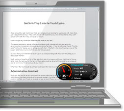

How to use Typing Meter:
1. Click 'OK'
2. Choose 'Typing Meter' from the menu on the right
3. Follow the instructions on screen to launch meter or adjust settings etc.
Note: TypingMeter is only available on Premium and Professional versions.